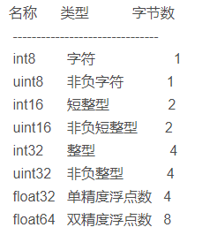

点云数据格式
PLY格式
PLY文件格式是Stanford大学开发的一套三维mesh模型数据格式，图形学领域内很多著名的模型数据， 比如Stanford的三维扫描数据库（其中包括很多文章中会见到的Happy Buddha, Dragon, Bunny兔子）， Geogia Tech的大型几何模型库，北卡(UNC)的电厂模型等，最初的模型都是基于这个格式的。
PLY作为一种多边形模型数据格式，不同于三维引擎中常用的场景图文件格式和脚本文件，每个PLY文件只用于描述一个多边形模型对象(Object) ，该模型对象可以通过诸如顶点、面等数据进行描述，每一类这样的数据被称作一种元素(Element)。相比于现代的三维引擎中所用到的各种复杂格式， PLY实在是种简单的不能再简单的文件格式，但是如果仔细研究就会发现，就像设计者所说的 ，这对于绝大多数的图形应用来说已经是足够用了。
PLY文件格式为：文件头+数据内容，文件头从 ply 一行开始，到 end_header 为止， 里面定义了此 ply文件中数据的组织形式，包括数据类型和个数。之后的数据内容完全按照文件头的定义来组织。
EXAMPLE-1.ply
ply
format ascii 1.0
element vertex 5
property float x
property float y
property float z
property uchar red
property uchar green
property uchar blue
end_header
-0.0856152 0.0246039 0.683328 0 255 0
-0.510705 -0.154819 0.806933 0 255 0
-0.158854 0.184305 0.77175 0 255 0
0.252752 0.0789101 0.738927 0 255 0
-0.388887 -0.120427 0.73772 0 255 0
解读：
-
format关键字后跟着的是数据的编码形式，分为 ASCII码和 binary两类；(only ASCII format is readable) -
element关键字后面跟的是元素类型和个数，这里是 5个顶点；元素除了顶点（vertex）外还有面片（face）； -
property关键字后面跟的是这个元素（element）的数据类型，此处表示每个点（用一行表示）后跟着6个数据。
PS：这里复习一些基本数据类型

EXAMPLE-2.ply
ply
format binary_little_endian 1.0
comment abc.png
element vertex 300
property float32 x
property float32 y
property float32 z
element face 600
property list uint8 uint32 vertex_indices
property list uint8 float32 texcoord
end_header
解读：
comment后跟着的是注释信息，带贴图的 ply文件需要将贴图文件名放在注释信息后，除此之外 comment后还可以跟一些作者、版本等信息；face后的 property有两行，第一行定义了 face的顶点列表，第二行定义了 face对应贴图的坐标列表；
list uint8uint32 vertex_indices
list表示后面跟着的是个列表，vertex_indices 指的是这是个顶点列表，本行用一个 uint8的数字打头，指出列表中的元素个数（对于面片来说一般大于三），然后 unint32表示的是列表中数据的类型，也就是用 32位无符号整形表示此面片顶点对应的 vertex元素的编号（按顺序从小到大）。
list uint8float32 texcoord
list表示后面跟着的是个列表，texcoord指的是这是个纹理坐标列表，同样用一个 uint8的数字打头，指出列表中的元素个数（uv坐标就是2），然后float32表示的是列表中数据的类型，也就是用 32位 float表示纹理坐标值。
Intel RealSense导出的PLY格式
ply
format binary_little_endian 1.0
comment pointcloud saved from Realsense Viewer
element vertex 249208
property float32 x
property float32 y
property float32 z
property uchar red
property uchar green
property uchar blue
element face 463878
property list uchar int vertex_indices
end_header
Commands
mkdocs new [dir-name]- Create a new project.mkdocs serve- Start the live-reloading docs server.mkdocs build- Build the documentation site.mkdocs -h- Print help message and exit.
Project layout
mkdocs.yml # The configuration file.
docs/
index.md # The documentation homepage.
... # Other markdown pages, images and other files.